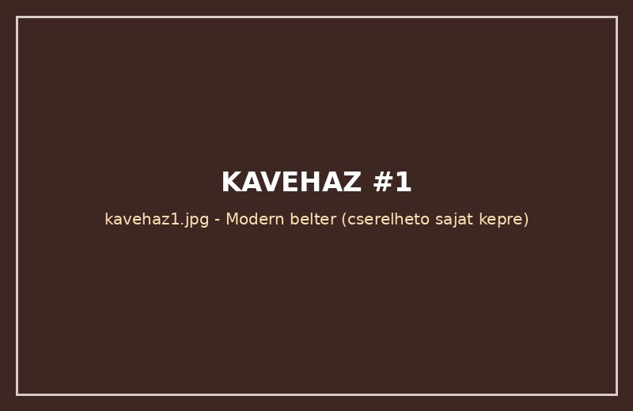
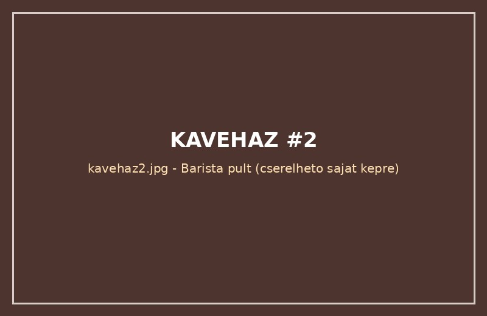
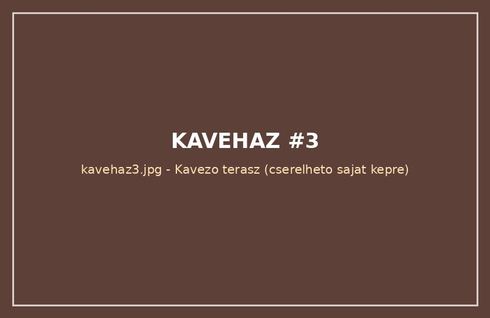

Kávéházi Galéria
Tekints be a Coffee House mindennapjaiba! Hangulatos belső tereink, a pult mögötti precíz barista munka és a frissen sült finomságok mind hozzájárulnak a tökéletes kávéházi élményhez.

Világos, barátságos belső tér ablak melletti munkahellyel és kényelmes asztalokkal.

Meghitt, fényfüzéres esti sarok rusztikus bútorokkal és meleg hangulattal.

Napfényes, tágas tér hatalmas ablakokkal a nyugodt reggelikhez és beszélgetésekhez.

Indusztriális stílusú belső tér téglafalakkal és meleg fényű függőlámpákkal.

A barista pult frissen főzött kávékkal és a reggeli süteményes vitrinnel.

Modern, fényfüzérekkel díszített kiszolgálópult és bőséges italkínálat.